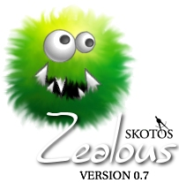

0.7.11
2010-02-23 - Increased max-version so it will work with Firefox 3.6.
2009-07-14 - Fixed bug that caused clickable game-text not
to work in Firefox 3.5.
2009-07-14 - Moved maxversion to 3.5.*, allowing use with the
latest versions of Firefox.
2008-09-02 - Changed <html:iframe> elements to <iframe>.
2008-05-19 - Changed updateURL location to use https site,
so that Firefox 3.0 will allow installation.
2008-03-18 - Fixed CM#30667 (bug with macros when directory
was renamed, as reported by Lucus's player
(CM)).
2008-01-17 - Added "," support to quick-reply to pages in-
game.
2008-01-03 - Fixed clickable linking to be compatible with
special characters.
2007-04-20 - Added install.js for compatibility with Mozilla/
SeaMonkey.
2007-04-20 - Changed handling of clickable game output for
compatibility with Mozilla/SeaMonkey.
2007-04-17 - Fixed focus in triggered commands.
2007-04-17 - Allow sending of empty line.
2007-04-13 - Fixed style attributes that caused warnings.
2007-04-06 - Moved maxversion to 3.1, allowing testing with
experimental Firefox versions, at your own risk
though.
2007-04-04 - Added support for more HTML tags.
2007-04-04 - Improved handling of unbalanced HTML tags.
2007-04-02 - Added support for triggered commands to be sent
silently.
2007-04-02 - Added support for triggered commands to be sent
silently.
2007-04-01 - Fixed the network buffering to avoid missing
meta-data.
2007-04-01 - Fixed portbase that Ironclaw uses these days
(for woe support)
0.7.10
2006-10-17 - Fixed compatibility issues for FireFox 2.0.
2006-10-17 - Fixed preference load bug.
2006-10-17 - Fixed dialog issue where FF 2.x would crash
due to relative paths.
2006-10-17 - Fixed macro bug.
2006-10-17 - Fixed escaping bug.
2006-10-17 - Fixed Getting Started style links.
2006-10-20 - Fixed escapeSkotosLink bug with quotes.
2006-11-21 - Fixed autolog filename.
2006-11-22 - Fixed background image bug (unable to clear).
2006-11-22 - Fixed autologging-sometimes-disabled bug.
0.7.9
2006-08-03 - Fixed bug in preferences which prevented macros
from working correctly.
2006-06-10 - WOE now loads objects with spaces correctly
2006-06-09 - Disabled scrollback-buffer as it may be the
cause for experienced lag among players
2006-05-20 - WOE now does keepalive for the routered
folks
2006-05-20 - WOE now reloads items reselected properly
2006-04-06 - New SKOOT protocol support (disabled in 0.7x
version)
0.7.5
2006-02-17 - WOE reload-same-page-when-browsing fixed 2006-01-27 - System beep toggle on incoming page 2006-01-27 - Toggle for blinking title alert 2006-01-26 - Added0.7.4tag support 2006-01-20 - Added tag support 2006-01-19 - Ability to define fixed font style 2006-01-18 - Added macro support in preferences 2006-01-18 - Added total skin support to prefs support includes left, right sidebars, left and right logos and both Getting Started and Mastering Chat buttons.
2006-01-16 - Added Buffer Toggle to Options Menu
2006-01-16 - Added Clear Scrollback Option
2006-01-16 - Added ability to define fixed font size
2006-01-16 - Removed all enablePrivilege calls
as these are redundant in extensions
2006-01-16 - Improved Woe interface to include
gamelink frame
2006-01-16 - Added Zelly to skin, appears on
your extensions page now.
2006-01-16 - Added option to delete background
2006-01-16 - Added list of backgrounds you've used
2006-01-16 - Changed menu options, names, etc
2006-01-16 - Fixed background bug that wouldn't
revert background if you didn't have
one set
2006-01-15 - Added Woe interface
2006-01-14 - Fixed onMainLoad repeat issue
0.7.3
2006-01-13 - Added tab completion from mudzilla
2006-01-13 - Added menu option to change background
2006-01-13 - Added hotkeys to menus
2006-01-13 - Added zealotry protocol
2006-01-13 - Changed Zealous to Zealotry and made
it an XPI that no longer requires certs
to use.
2006-01-12 - Added groundwork for changeable background
images. Need to add a way to set them.
2006-01-12 - Added image by Age to changelog and
to zealousabout files.
2006-01-11 - Various minor bug fixes, undeclared
variables, etc.
2006-01-11 - Changed Load Config to prompt for config
file if one is not located in your home
folder. Only prompts on Load Config, not
when you first start Zealous. That would
be to annoying as it would always prompt
if you didn't have a home folder set or
if the file was missing.
2006-01-11 - Added Dictionary lookup support, accesskey F2,
using dictionary.net dictionary service.
2006-01-11 - Added Menu item Help and suboptions
2006-01-11 - Added zealousabout.txt
2006-01-11 - Added changelog.txt
2006-01-11 - Fixed issue with scrollback not starting at end
but rather one half screen up
2006-01-11 - Added functionality to open various windows for
Help menu options
2006-01-10 - Support added for secondary scrollback buffer
2006-01-10 - Fixed issue with preferences not saving Echo
toggle
2006-01-10 - Fixed issue with Echo preference not being
restored at startup
0.6
????-??-?? - Added Autolog support
????-??-?? - Added logging support
????-??-?? - Added font and size support
????-??-?? - Fixed memory leak issues
????-??-?? - Added macro support
????-??-?? - Added config file support